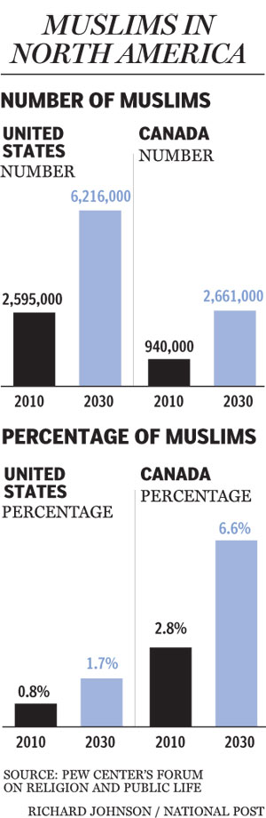
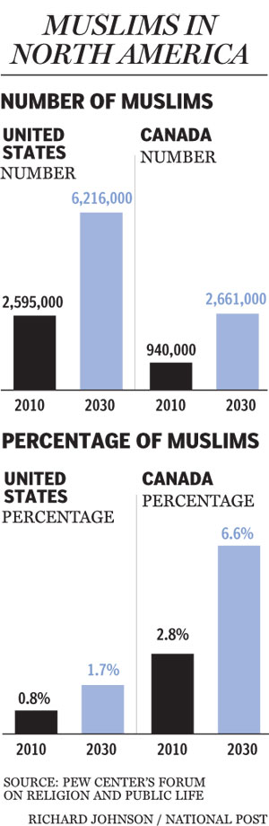
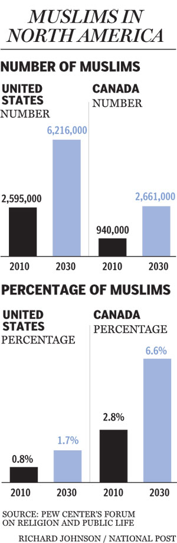

Canada is celebrated globally for its strong stance on human rights, diversity, and multiculturalism. With a total population exceeding 37 million, Canada is home to a significant number of immigrants from all corners of the world. Muslims constitute about 3.2% of the total population, making Islam the second largest religion in the country after Christianity. This demographic has seen a steady increase over the decades due to immigration and higher birth rates among Muslim families.
The integration of Muslims into Canadian society has not been without challenges. Despite Canada's progressive image, there have been notable instances of Islamophobia, manifesting through both individual discrimination and systemic biases. The implications of these acts affect not only the Muslim population but also the broader societal cohesion.

The history of Muslim immigration to Canada dates back to the early 20th century, but it was not until the changes in immigration laws in the 1960s and 1970s that a significant number of Muslims began arriving. This shift has contributed to the rich tapestry of religious diversity in the nation. Today, Canada's Muslim community is extremely diverse, encompassing a wide range of ethnicities, languages, and cultural backgrounds, reflecting the global Muslim diaspora.
Religious diversity in Canada is a testament to the country's policy of multiculturalism, which is enshrined in the Canadian Multiculturalism Act of 1988. This act was designed to preserve and enhance the multicultural heritage of Canadians while ensuring that all citizens can keep their identities, take pride in their ancestry and have a sense of belonging. Acceptance and respect are foundational principles that supposedly define the Canadian multicultural society.
However, the rise in Islamophobic incidents, especially post-9/11, has tested these multicultural policies. The backlash against Muslim communities in certain areas, coupled with increased scrutiny under national security pretenses, showcases the challenges faced by Muslims in Canada today.